Дастури пурраи система: чӣ кор мекунад, кадом функсияҳо дорад ва чӣ гуна истифода мешавад.
Сана: 27 октябри 2026 · Забонҳо: тоҷикӣ / русӣ / англисӣ
Buzines платформаи идоракунии бизнес бо ёрии AI аст. Сардор танҳо мақсадро мегӯяд («фурӯш зиёд шавад»). AI таҳлил мекунад, вазифаҳо месозад, ба коргари мувофиқ таъин мекунад ва иҷроро назорат мекунад.
Раванди асосӣ
Фармони сардор → таҳлили AI → вазифаҳо → барномаи ҳар коргар → гузориш → пайгирии AI
Ду намуди ҳисоб аст:
/work: вазифаҳои худро мебинад, иҷро мекунад ва гузориш медиҳад.Telegram барои ирсоли вазифа истифода намешавад. Ҳар коргар бо email ва парол ба барномаи худ ворид мешавад.
Саҳифаи аввал. Email, парол, интихоби забон (ТОҶ / РУС / ENG). Сардор ба панел меравад, коргар ба «Кори ман».
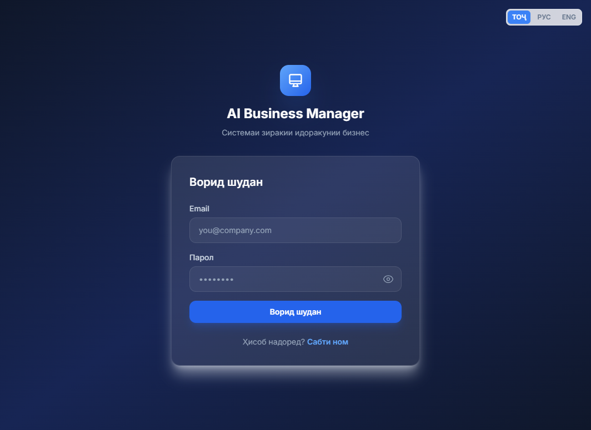
Расм 1. Ворид шудан — http://localhost:4201/auth/login
Соҳиби бизнес ҳисоби нав месозад: ном, насаб, email, парол. Баъд onboarding (шиносоии бизнес ба AI) кушода мешавад.
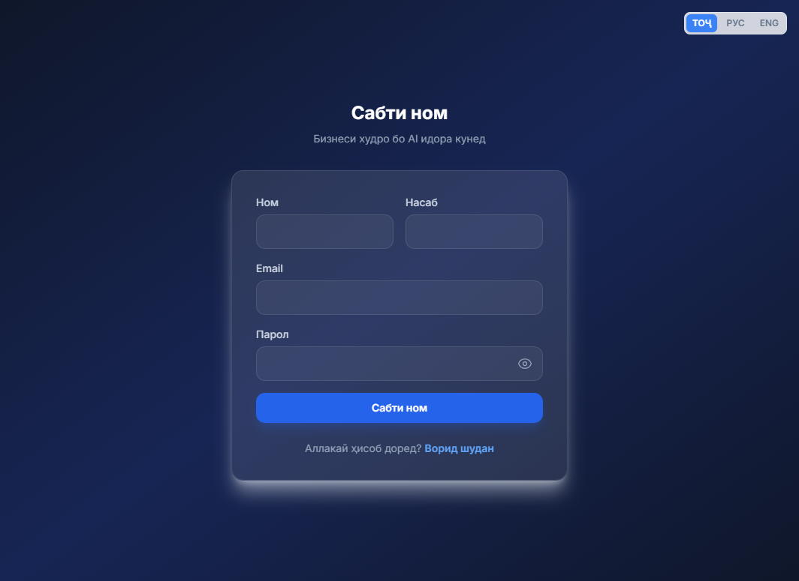
Расм 2. Сабти номи соҳиби бизнес
Саҳифаи марказӣ. Шумо як ҷумла менависед. AI вазифаҳо месозад ва ба барномаи коргарон мефиристад. Тугмаҳо: сохтани вазифа, ирсол, follow-up (пурсидани пешрафт).
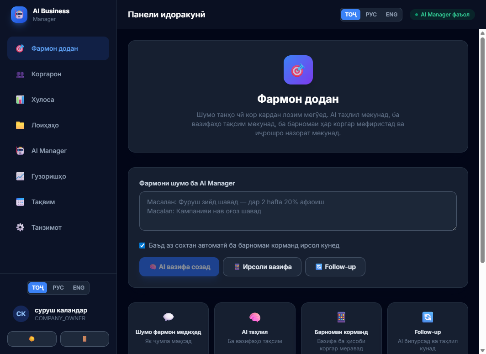
Расм 3. Фармон додан ба AI Manager
Рӯйхати даста. Ҳар коргар email ва парол мегирад (пешфарз: Worker123!).
Вазифаҳо ба барномаи ӯ мераванд. Нишондиҳандаҳои самаранокӣ ва сатҳ нишон дода мешаванд.
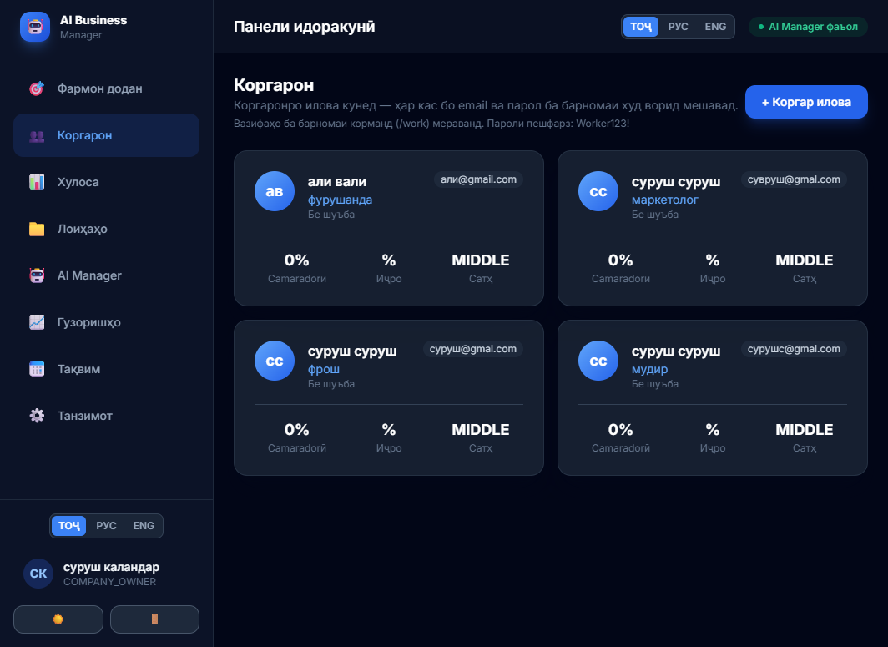
Расм 4. Илова ва назорати коргарон
KPI: коргарони фаъол, вазифаҳои иҷрошуда, вазифаҳои дер, самаранокӣ. Графикҳо, тавсияҳои AI ва пешрафти лоиҳаҳо.
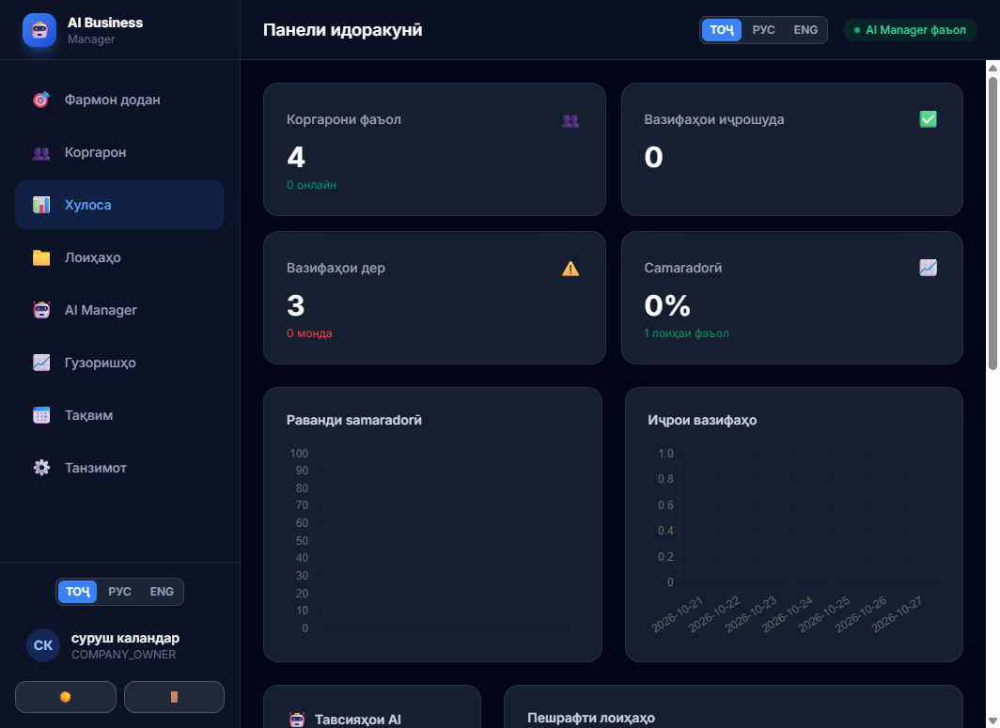
Расм 5. Хулосаи рақамӣ ва графикҳо
Ҳар фармон лоиҳа мешавад. Пешрафт, мӯҳлат, шумораи вазифаҳо ва ҳолати саломатӣ. AI метавонад лоиҳаро боз ба вазифаҳо тақсим кунад.
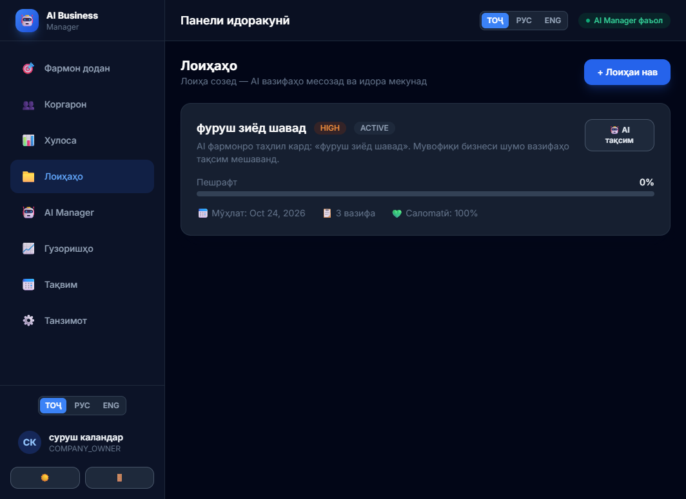
Расм 6. Лоиҳаҳо ва пешрафт
Маркази зеҳнӣ. Ҳолати ҷорӣ (вазифаҳои кушода, фармонҳо, бори коргарон), таҳлили бизнес, нақшаи рӯзона, тавсияҳо ва ҷустуҷӯи вазифаҳои дер.
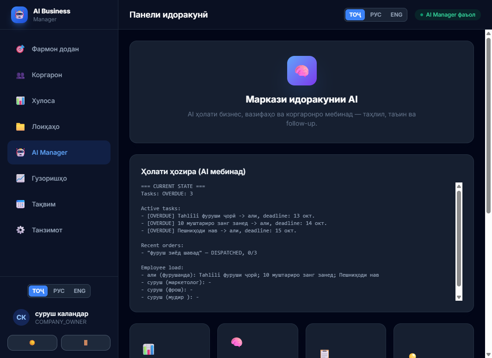
Расм 7. Маркази идоракунии AI
Гузоришҳои самаранокӣ: рӯзона, ҳафтаина, моҳона, семоҳа, солона. Дар режими пурра мустақил AI ҳар ҳафта гузориш тайёр мекунад.
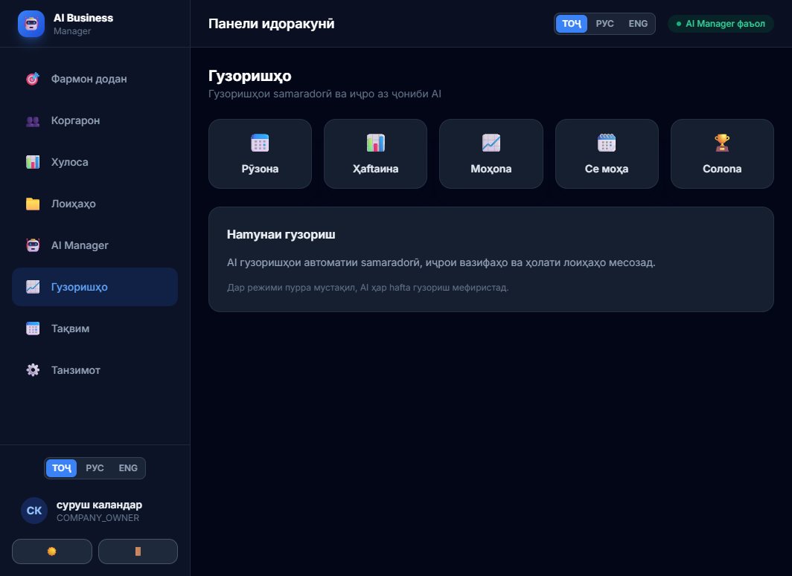
Расм 8. Гузоришҳо
Мулоқотҳо, мӯҳлатҳо ва рӯйдодҳои даста дар як моҳ.
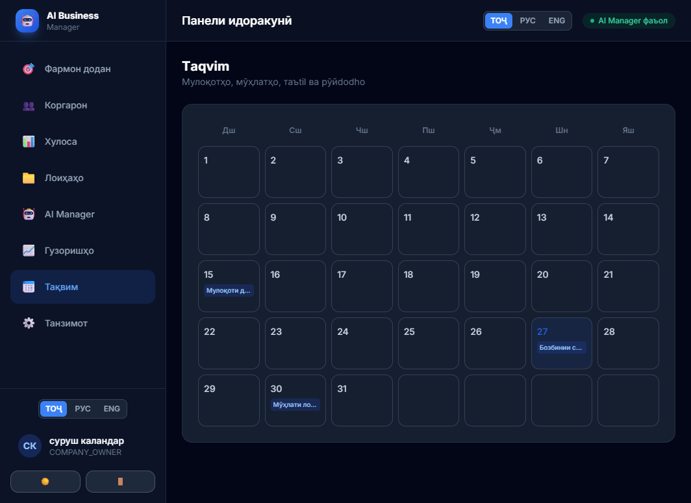
Расм 9. Тақвими кор
Профили бизнес барои AI, соати кор, сатҳи мустақилияти AI (пурра мустақил ё танҳо маслиҳат). Telegram пайваст намешавад.
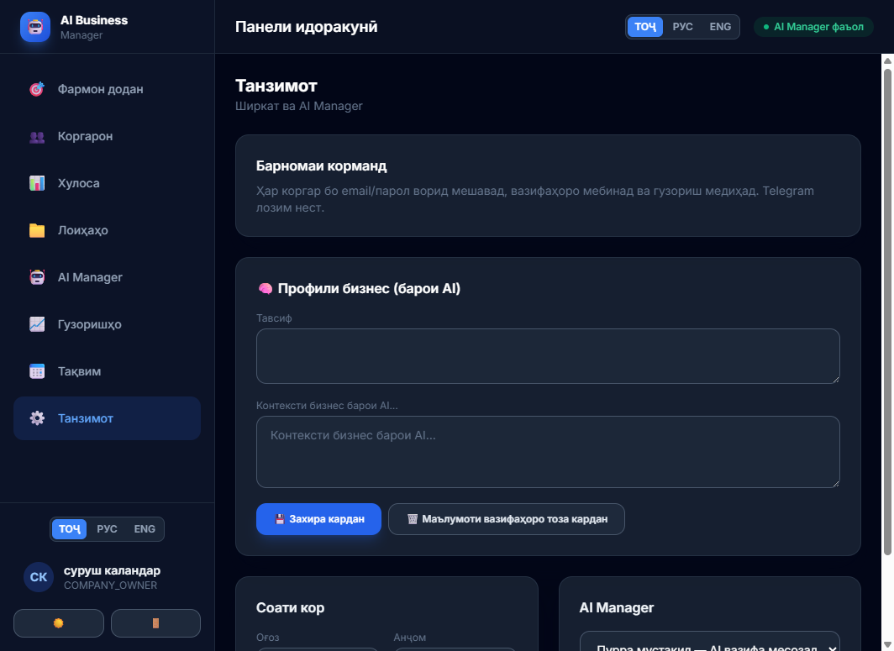
Расм 10. Танзимоти ширкат ва AI
Коргар бо email/парол ворид мешавад ва танҳо саҳифаи худро мебинад. Ду ҳисоб: иҷронашуда ва иҷрошуда. Барои ҳар вазифа гузориш менависад; AI месанҷад, ки кор анҷом ёфтааст ё не.
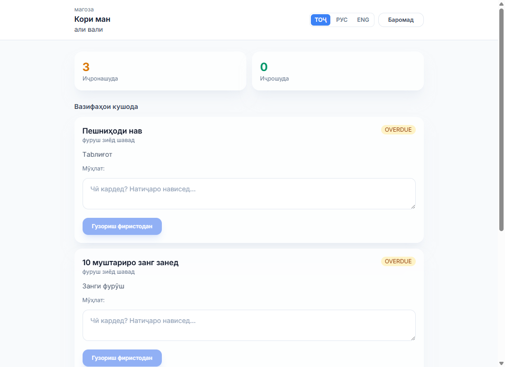
Расм 11. Барномаи коргар — http://localhost:4201/work
| Функсия | Кӣ истифода мекунад | Чӣ медиҳад |
|---|---|---|
| Сабти ном / воридшавӣ / JWT | Ҳама | Ҳисоби бехатар, 3 забон |
| Onboarding | Сардор | AI бизнес, маҳсулот ва равандро меомӯзад |
| Фармон додан | Сардор | Як фармон → вазифаҳои тайёр |
| Ирсол ва follow-up | Сардор + AI | Вазифа ба барномаи коргар, назорат |
| Коргарон | Сардор | Илова бо email/парол, нишондиҳандаҳо |
| Кори ман | Коргар | Дидани вазифа, гузориш, иҷрошуда/нашуда |
| Хулоса | Сардор | KPI, график, тавсия |
| Лоиҳаҳо | Сардор | Пешрафт ва вазифаҳои лоиҳа |
| AI Manager | Сардор | Таҳлил, нақшаи рӯз, ҳолати ҷорӣ |
| Гузоришҳо / тақвим | Сардор | Ҳисобот ва рӯйдодҳо |
| Танзимот | Сардор | Контекст, соати кор, мустақилияти AI |
| Огоҳиҳои дохилӣ | Коргар | Вазифа ва ёдрасӣ дар барнома |
| Қисм | Технология |
|---|---|
| Frontend | Angular 21, TypeScript, Tailwind CSS |
| Backend | NestJS, Prisma, JWT |
| AI | Groq / OpenAI (LLM) |
| Real-time | WebSocket (Socket.io) |
| Ирсоли вазифа | Барномаи коргар (in-app), на Telegram |
http://127.0.0.1:3000 — npm run start:dev дар ҷузвдони backendhttp://localhost:4201 — ng serve --port 4201 дар ҷузвдони frontendWorker123! → саҳифаи /work